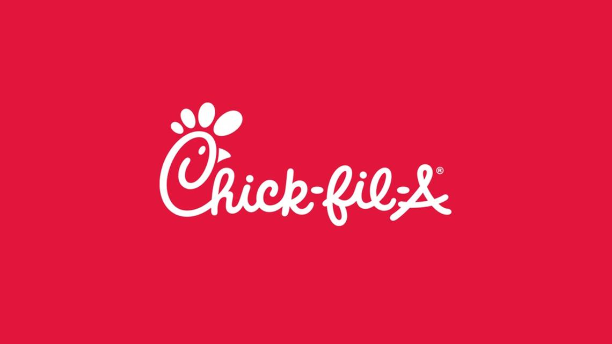
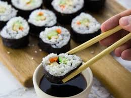
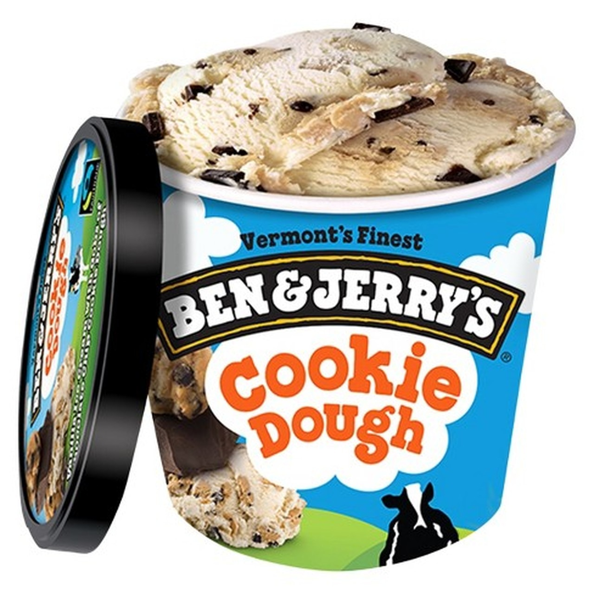

These are some of my favorite foods, but not all of them! If you have similar favorites, let me know on through the email on my contact page!
 Chick Fil A I love Chick Fil A for breakfast, lunch, or dinner!
Sushi I especially love salmon and avocado rolls!
Ice Cream (especially Ben and Jerry's!!) I especially love salmon and avocado rolls!